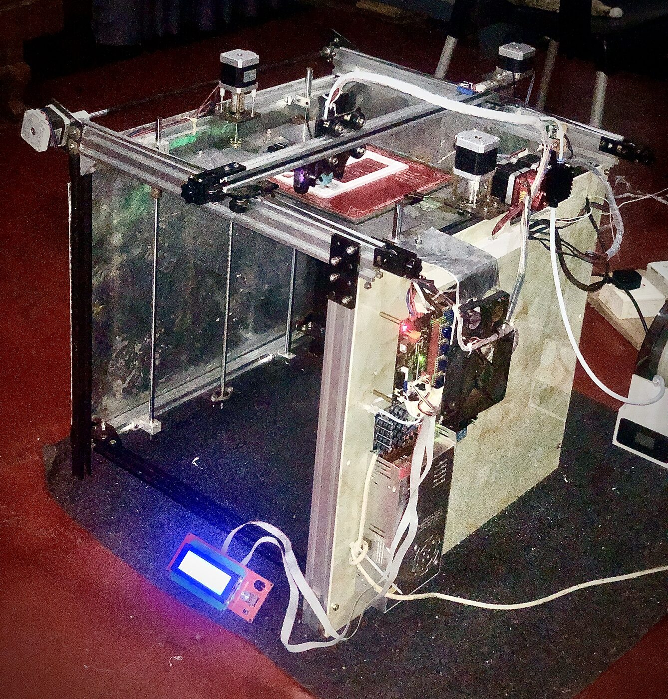

Problem
I needed a practical platform for rapid prototyping and hands-on learning beyond theory.
3D Printing / Machine Build
Personal project evidence for learning motion systems, calibration, slicing workflow, material behavior and iterative prototyping.

I needed a practical platform for rapid prototyping and hands-on learning beyond theory.
Build support, setup, calibration, print testing, troubleshooting and iteration.
Worked through mechanical setup, print quality checks, slicing parameters and repeated trial feedback.
Used the printer build as a learning platform for jigs, fixtures, prototypes and functional trial parts.
Built stronger practical knowledge of additive manufacturing, tolerances, printer behavior and design-for-printing decisions.
Only personal/public-safe project media is used. No company CAD dimensions or private production information is included.